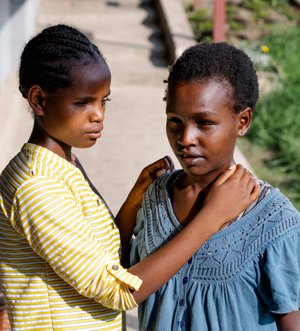

Shashemene (pronounced Sha-sha-mene) is a town located in the south of the Democratic Republic of Ethiopia in the Oromia Region, roughly 150 miles from the capital city of Addis Ababa. It is located in the Rift Valley at an altitude of 2000 feet.
The school
Shashemene Catholic School for the Blind and visually Impaired is one of the residential schools run by the Apostolic Vicariate of Meki. It is dedicated to provide basic education and various kinds of support to blind and visually impaired individuals in its serene environment, suitable for learning and rehabilitation of the blind.
Shashemane School for the Blind (SSB) has endeavoured to give future and a home to the visually challenged. Our objective is to help our students towards self reliance through education. The school covers the full expenses of its students from grade 1 to 6. Every need of the children is seen to as far as we can.
The journey of SSB throughout the years has been one of challenge and success, sadness and joy, and above all growth and learning. Although more difficulties are sure to arise along the way, the Center will continue its journey in the hope of reaching many more individuals and families and becoming a national focal point for empowering visually impaired Ethiopians through education, vocational training, and life skills and make them self reliant.
Every child has to be given a chance to prove what they can do.
Our goals
The goal of Shashemane School for the Blind is to address the needs of the visually impaired children from all over Ethiopia, to enhance their lives and opportunities through formal education and to make them self reliant. These children leave the Center empowered to live independent lives, and to act as a voice for equal rights for all those living with disabilities.
The location
What we teach
The students are taught basic literacy in Amharic, Oromo and English and furthermore, braille, vocational skills and self-care. Their communal boarding house environment helps nurturing one-on-one mentoring relationships, as well as the life skills of mobility, cooking, nutrition, music, first-aid, and handicraft.
Regular health examinations and counseling are also available to the children residing in the boarding facilities.
School activities
Additionally, just like any other sighted person the students take part in sports, music, drama, composing of poems, football games and do handicrafts. At times they also participate in the Paralympics on a regional level. If other activities are organised in or outside the town, the students get the opportunity to join. We wish for them to experience and enjoy the privileges of any other healthy child. After all they miss only the sense of sight.
We wish for them to experience and enjoy the privileges of any other healthy child.

“Inspired by the spirit of God, and our patron St. Francis of Assisi we the Franciscan Sisters of St. Mary of the Angels, endeavor to care for our visually challenged students by cherishing the uniqueness of each person in an atmosphere permeated by the Christian values of Truth, Justice and Preciousness of each child. Shashemane school for the Blind in cooperation with the Meki Vicariate and our benefactors aims to enable each student to achieve her or his full potential physically, emotionally, intellectually, socially and spiritually.
Shashemane School for the Blind (SSB) has endeavoured to give future and a home to the visually challenged. Our objective is to help our students towards self reliance through education. The school covers the full expenses of its students from grade 1 to 6. Every need of the children is seen to as far as we can.
We undertake this mission in cooperation with a dedicated team of teachers, caregivers and other supporters. Our small class size allows us to offer intensive, individual attention in a relaxed, friendly and caring environment.
With proper education, it is possible for blind people to learn, and see that they have potential.
Shashamene School for the Blind had been at the forefront of introducing care for visually challenged children in a residential setting for the past 39 years. Indeed we have a sense of profound sentiments of thanksgiving to God for choosing us to nurture life. Each year the school caters to more than 100 students irrespective of sex, tribe, and religion. Currently we are trying our best to provide a range of progressive programs to enhance the educational opportunities of the students.
At Shashemane School for the Blind our young ones find a real and true home, a space where they are free to grow in openness, security and peace. The school is going through the usual trials and tests of growth and economic crisis but has been empowered by the concern and support of our friends and donors.”
Miss Haimonot Sibhatu
“I wish to thank you for the support and help you provided, for your dedication, attention and open-minded thinking and for your readiness to help. I was just 9 years old when I joined Shashemane Boarding school. My family lives in a village far from the city. They are poor and their only income if farming which enables us to live from hand to mouth. My father died when I was 1 year old. I become blind as a result of absence of medicine. As my parents could not afford my aunty brought me to Addis Ababa to save me from blindness but because of financial difficulties she could not save my eyes. She was confused and stressed as to what to do. At this moment Shashemane school opened the door for us and received me to give education and saw to all my needs.
This school was like a parent who gave me good parenting and foundation to develop self confidence, a sense of self-esteem and how to handle difficult situation. When my aunt passed away the school staff was with me and gave courage and to be strong. Even after completely grade 6 the school continued to assist me financially and through all kinds of advice therefore, even though I was in Addis Ababa for higher education , I was thinking that I was within the boarding school. With the help of the school I am graduated from Addis Ababa University in social sciences school of social work . Thank you for all you did to me, you and the school is always in my heart and I missed you all the time.”
▲Get involved
Volunteering
We invite you to become a Volunteer. Many of our Students depend on volunteers for improving their quality of life. In fact, Volunteers are a vital part of our program’s success.
Get in touch
Shashemane School for the Blind
P.O.Box: 18
Ethiopia, Oromia
Phone Number Off. +251 461 102 728
Phone Number Res. +251 461 102 642
Mobile: +251 921 874 833
Email: ethssb@gmail.com